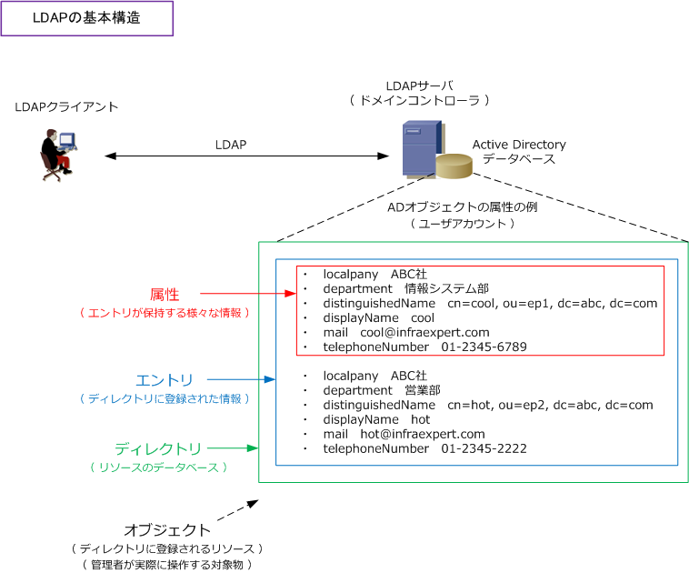
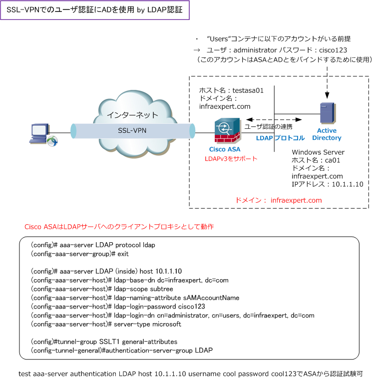

LDAP Authentication
LDAPとは
LDAP（Lightweight Directory Access Protocol）は、Active Directoryのようなディレクトリサービスに アクセスするためのプロトコル。クライアントはTCPポート番号389を使用してLDAPサーバに接続を行い 属性（個人名や部署名）で構成するエントリ（関連属性のまとまり）の検索、追加、削除の操作をします。
例えば「cool」というユーザ名に会社名、電話番号、メールアドレスなどを結びつけたデータベースである LDAPサーバにおいて「cool」という名前から cool@infraexpert.com のメールアドレスを検索し抽出をし、 LDAPプロトコルでLDAPクライアント（例としてメアドを検索するメーラー）と通信をし情報を提供します。

ディレクトリに登録していくオブジェクトには、単一のオブジェクトとして機能するリーフオブジェクトや 複数のオブジェクトを格納する機能をもつコンテナオブジェクトがあります。リーフオブジェクトの例として ユーザアカウントが該当します。コンテナオブジェクトの例としてOU（Organizationl Unit）が該当します。
上図では、オブジェクトの例としてユーザアカウントを紹介していますが、オブジェクトにはその他にも コンピューターアカウント、グループポリシー情報、DNSレコードの情報、サイトの情報などがあります。 そして、このリーフオブジェクトを格納するOUに適切に構成することでディレクトリ階層を構築できます。
LDAPサーバにはMicrosoftのActive Directory、オープンソフトウェアのOpenLDAP等があります。現在使用 されているLDAPのバージョンはセキュリティ機能も強化されたLDAPv3です。RFC4511で勧告されています。
LDAP識別名とは
LDAPによりディレクトリサービスにアクセスする際に対象を指定する手段としてLDAP識別名を使用します。 LDAP識別名は、単に識別名（DN）とも呼ばれます。LDAP識別名は、複数のLDAP相対識別名（RDN）を カンマで区切って並べたもの。DNはDistinguished Name、RDNはRelative Distinguished Nameの略です。 例えば、ドメイン「infraexpert.com」のコンテナ「Users」に配置したユーザー「cool」は以下となります。
cn=cool, cn=Users, dc=infraexpert, dc=com
LDAP相対識別名は「属性値=値」という構文で定義しますが、この属性値にどのような値を使用できるかは ディレクトリサービスのソフトウェアにより異なります。例えばActive Directoryでは次の属性値が使えます。
Active Directoryで使用できるLDAP属性値
| LDAPの属性値 | 属性表示名 | オブジェクトタイプ |
|---|---|---|
| cn | Common-Name | ユーザー名、グループ名、コンピュータ名、コンテナ名 |
| ou | Organizational-Unit-Name | 組織単位（OU） |
| dc | Domain-Component | ドメイン |
LDAP識別名は、LDAP相対識別名をADツリーの階層の下から記述します。もう少し例を見てみましょう。 例えば、ドメイン「infraexpert.com」のOU「Sales」に配置したユーザー「cool」は以下となります。 cn=cool, ou=Sales, dc=infraexpert, dc=com
例えば、ドメイン「infraexpert.com」のコンテナ「Computers」に配置したコンピュータ「pc5」は以下。 cn=pc5, cn=Computers, dc=infraexpert, dc=com
Cisco ASA と Active Directory との連携 by LDAP認証
SSL-VPN接続のユーザ認証時に、Windows ServerのActive DirectoryとCisco ASAとが連携してLDAPを 使用し認証することができます。ADとASAが連携するといっても当然LDAPサーバはActive Directoryです。 LDAP認証の場合は、LDAPディレクトリにエントリがあるユーザがSSL-VPN認証に成功することができます。
ユーザ認証を行うだけならKeberosを使用した方が良いのですが、例えばActive Directoryのグループや OUなどの情報に基づき制御したい場合はLDAPを使用することが多いです。例えば、ADのグループを使用 して所属するグループ（memberOf）に応じて、ASAのグループポリシーを動的に割り当てる実装などです。
Cisco ASAとADが連携する前提として、ASA上で設定したクレデンシャル（下図の場合administrator）を 使用してLDAPサーバとバインドさせる設定が必要です。当然、このユーザはADに存在する必要があります。 ※ Cisco ASAとActive Directory間ではTCPポート番号：389 を使用して、LDAPプロトコルがやりとり。

上図のコンフィグにより、各種VPN接続のユーザ 認証時にLDAP認証が行われるようになりますが ADを使用したユーザ認証だけであればKerberos 認証の方が適しており、設定も簡単となります。 つまり、LDAPを使用するからには上図の設定に コンフィグを追加してLDAPの特性を生かすべき。
例えば、AD属性/LDAP属性の memberOf などを ASAで認識可能な「IETF-Radius-Class属性」に マッピングするマップを設定し、その上でLDAP サーバ(AD)で設定された属性値を、Cisco ASA のグループポリシー名にマッピングすることで グループに応じたIPアドレスの配布等が可能です。
Radius認証とLDAP認証の違い
LDAPでユーザ認証を行うことができますが、LDAPは本来「ディレクトリサービス」のためのプロトコルです。 例えば、IEEE802.1X認証でのユーザ認証ではRadiusサーバが使用されますし、ネットワークアクセス（接続） を行うためのユーザ認証といえば一般的にはRadius認証を使用します。Radiusでは、ユーザ情報をローカルの データベースとして保持することはあまりなくユーザデータベースとしてActive Directoryを使用する。ADの 実体はLDAPの拡張実装であり、その点でフロントでRadius、バックでLDAPを使用したユーザ認証が多いです。